How to use this lesson
§0 · From last time. Lessons 14.1-14.4 covered features and decisions per-call. Now we zoom out to the production scale: Batch API for cost reduction, rate-limit tiers for capacity, and the math for sizing your deployment.
Business Scenario
All three orgs, end of fiscal year planning.
Daniel (HSBC) is forecasting next year's Sherpa budget. Volume projects 30% growth — 1,820 cases/night. Cost projection at current $0.030/case = $20K/year. Acceptable, but Daniel wants to know what levers are available.
Maya (Helix) is launching a major literature review project — 5,000 documents to summarise in 30 days. Real-time isn't needed; she just wants the cheapest path.
Lin (Acme) is preparing for Black Friday — 10× normal traffic for 4 days. Will current rate limits hold? What happens if they don't?
Three different capacity stories, same architect questions: what's our scale, what are our limits, what's the cheapest way to hit our SLA?
Bridge to Topic
Production architects must know: (1) the Batch API saves 50% on async workloads, (2) rate-limit tiers (ITPM, OTPM, RPM) cap your throughput, and (3) capacity planning is concrete math — not vibes.
Mind Map

Mermaid source
mindmap
root((Cost & Scale))
Batch API
50 percent off input
50 percent off output
24 hour completion SLA
async only
supports tools / vision / PDF
Rate Limits
ITPM input tokens per minute
OTPM output tokens per minute
RPM requests per minute
tier 1 to tier 5
per model
Pricing Tables
Opus
Sonnet
Haiku
cache write 1.25x
cache read 0.10x
batch 0.50x
Capacity Planning
forecast tokens per minute
headroom 2x peak
tier upgrades
multi-provider fallback
Elaboration
4.1 Batch API
Send up to 10,000 requests at once; Anthropic processes them within 24 hours; you pay 50% of normal input AND output cost.
const batch = await client.beta.messages.batches.create({
requests: [
{
custom_id: "doc-001",
params: { model: "claude-sonnet-4-6", max_tokens: 1024, messages: [...] }
},
{
custom_id: "doc-002",
params: { model: "claude-sonnet-4-6", max_tokens: 1024, messages: [...] }
},
// up to 10,000
],
});
// Poll for completion
const status = await client.beta.messages.batches.retrieve(batch.id);
// status.processing_status === "ended"
// Stream results
for await (const result of client.beta.messages.batches.results(batch.id)) {
console.log(result.custom_id, result.result.message);
}
When Batch API wins:
- Offline evaluation runs (run your 500-case eval set in a single batch)
- Bulk document processing (Maya's 5,000 literature documents)
- Data backfills (re-process historical records)
- Synthetic data generation
When it doesn't:
- Anything user-facing (24-hour SLA is too slow)
- Anything where outputs feed into the next request (no chained reasoning)
- Conversation flows
4.2 Rate-limit tiers
Limits scale with your tier (which scales with monthly spend):
| Tier | Monthly spend req | Typical RPM | Typical ITPM (Sonnet) |
|---|---|---|---|
| 1 | $5 deposit | 50 RPM | 50K |
| 2 | $40+ spent | 1000 RPM | 100K |
| 3 | $200+ | 2000 RPM | 200K |
| 4 | $400+ | 4000 RPM | 400K |
| 5 | enterprise | custom | custom |
(Exact numbers shift; check the dashboard for current values.)
Three rate-limit dimensions to monitor:
- RPM (requests per minute) — burst capacity
- ITPM (input tokens per minute) — your prompt size × call frequency
- OTPM (output tokens per minute) — your response size × call frequency
You hit a 429 when ANY of the three is exceeded. Most production agents are ITPM-bound (long prompts), not RPM-bound (sparse calls).
4.3 Pricing tables (claude 4.x family, per million tokens)
| Model | Input | Cached read | Cache write | Output | Batch input | Batch output |
|---|---|---|---|---|---|---|
| Opus 4.7 | $15.00 | $1.50 | $18.75 | $75.00 | $7.50 | $37.50 |
| Sonnet 4.6 | $3.00 | $0.30 | $3.75 | $15.00 | $1.50 | $7.50 |
| Haiku 4.5 | $0.80 | $0.08 | $1.00 | $4.00 | $0.40 | $2.00 |
(Prices subject to change; check Anthropic pricing page for current.)
Note the cascade:
- Cached read is 10% of input
- Cache write is 125% of input (one-time)
- Batch is 50% of both input and output
- Batch + cached = 5% of input (effectively a 20× discount on the cached portion)
4.4 Capacity planning math
For a forecasted workload:
peak_RPM = peak_requests_per_minute
peak_ITPM = peak_RPM × avg_input_tokens_per_request
peak_OTPM = peak_RPM × avg_output_tokens_per_request
required_tier = min tier where:
RPM_limit ≥ 2 × peak_RPM
ITPM_limit ≥ 2 × peak_ITPM
OTPM_limit ≥ 2 × peak_OTPM
The 2× headroom rule: you want alerts to fire before you hit limits, with room to recover.
For Sherpa at 1,820 cases × 6 LLM calls × 4K input tokens × 3 hours of batch:
- ITPM during batch hours: 1820 × 6 × 4000 / 180 min ≈ 243K ITPM
- At Sonnet Tier 4 (400K ITPM): you're at 60% utilisation — comfortable
For Acme Black Friday at 10× normal volume:
- If today peaks at 50K ITPM → BF peaks at 500K
- Need Tier 5 (enterprise) for BF
- Pre-arrange with Anthropic at least 30 days in advance
4.5 Multi-provider fallback
For mission-critical workloads where rate limits or outages are unacceptable, route across providers:
async function callWithFallback(prompt: PromptInput) {
try {
return await anthropic.messages.create({...});
} catch (err) {
if (err.status === 429 || err.status === 529) {
// Anthropic overloaded or rate limited; failover to secondary
return await openai.chat.completions.create({...converted});
}
throw err;
}
}
Cost: ~10% extra engineering to maintain provider abstraction. Benefit: outage resilience + negotiating leverage with Anthropic.
Problem Statement
For each org, design the capacity plan:
- HSBC — 30% growth projection. Current $0.030/case. What levers reduce cost without quality loss?
- Helix — 5,000 docs in 30 days, async. Cheapest path?
- Acme — Black Friday 10× burst. Capacity prep?
Solution Walkthrough
1. HSBC growth + cost optimisation
Current state: 1,400 cases/night × $0.030 = $42/night = $15K/year.
Levers, ranked by impact:
| Lever | Cost change | Effort | Notes |
|---|---|---|---|
| Maximise prompt cache | -50% on cached portion | 1 week | Tighten prefix discipline, run regular audits |
| Tier routing (Haiku for routine) | -30% overall | 2 weeks | Per Lesson 14.3 |
| Move 30% of eval workload to Batch | -15% of eval cost | 2 days | Easy win for non-real-time evals |
| Use 1-hour TTL cache for batch windows | -5% | 1 day | Marginal but free |
Combined: from $0.030 → $0.015/case. Annual: $15K → ~$8K. 47% reduction.
2. Helix 5,000 docs batch
Submit as a single Batch API call:
const batch = await client.beta.messages.batches.create({
requests: documents.map((doc, i) => ({
custom_id: `doc-${i}`,
params: {
model: "claude-sonnet-4-6",
max_tokens: 2048,
messages: [{
role: "user",
content: [
{ type: "document", source: { type: "base64", media_type: "application/pdf", data: doc.pdf } },
{ type: "text", text: "Summarise the key findings, methodology, and limitations." },
],
}],
},
})),
});
Cost:
- 5,000 docs × ~10 pages × $0.0025/page (batch Sonnet vision) = ~$125 input
- 5,000 × 800 output tokens × $7.50/M (batch) = $30 output
- Total: ~$155 for the entire job
Real-time equivalent: ~$310. Batch saves $155 for 30-day SLA. Easy choice.
3. Acme Black Friday
Today: 320K tickets/month, ~10K/day, ~7 ITPM during business hours (Sonnet).
Black Friday: 10× → 100K/day, ~70K ITPM peak (4 days). Currently Tier 2 (100K ITPM); peaks at 70% utilisation. Risky.
Plan:
- 30 days before BF: contact Anthropic, upgrade to Tier 4 (400K ITPM headroom)
- Configure multi-provider fallback (route to GPT-4o on 429s)
- Pre-warm cache (Lesson 14.2) so prefix is hot before traffic spike
- Enable degraded mode (Module 9.4) — if all else fails, fall back to workflow-only path
- Run a load test 1 week before to validate
Cost spike: 10× requests for 4 days = ~$2K extra for BF. Worth it; revenue spike is much higher.
Mathematical Foundation
7.1 When to use Batch API
batch_cost = 0.50 × realtime_cost
worth_using = (24h SLA acceptable) AND (no dependency between requests)
Almost any offline eval, backfill, or bulk processing qualifies. Real-time chat does not.
7.2 Tier-upgrade trigger
Upgrade to the next tier when peak utilisation > 50% of current tier's limit. This gives 2× headroom.
7.3 Cost-per-million-tasks rough math (Sonnet, no cache)
cost ≈ (input_tokens × $3 + output_tokens × $15) / 1M
For 1M tasks of 4K input + 1K output each:
- Input: 4B × $3/M = $12K
- Output: 1B × $15/M = $15K
- Total: $27K per million tasks
With 95% cache hit + tier routing (40% Haiku, 50% Sonnet, 10% Opus):
- ~$12K per million tasks (55% reduction)
Technical Deep-Dive
8.1 Batch API quirks
- Submission max: 10,000 requests per batch
- Individual request size: same as real-time (200KB body)
- Results streaming: chunks come as JSONL — process incrementally
- Failures: per-request errors are returned with the request's
custom_id; rest of batch continues - Cancellation: possible before processing starts; not after
8.2 Rate-limit error response
HTTP 429
{
"type": "error",
"error": {
"type": "rate_limit_error",
"message": "..."
}
}
Headers:
retry-after: 60 # wait this many seconds (when present)
anthropic-ratelimit-requests-limit
anthropic-ratelimit-requests-remaining
anthropic-ratelimit-tokens-limit
anthropic-ratelimit-tokens-remaining
Always honor retry-after when present. Anthropic's response telemetry is a useful signal — surface remaining limits in your observability spans.
8.3 Per-model vs aggregate limits
Rate limits are per model, per organisation. So:
- Sherpa using Sonnet doesn't consume your Haiku budget
- Acme's Sonnet limit is separate from HSBC's (different orgs)
- But all your Sonnet usage across all apps shares the same ITPM
For multi-app workloads, monitor per-model utilisation, not aggregate.
8.4 Cost forecasting template
Per-task cost = (
cached_input × Pcache_read +
uncached_input × Pin +
output × Pout
) × tier_multiplier
Annual cost = per_task_cost × tasks_per_day × 365 × growth_factor
Set headroom = 2 × peak_TPM for capacity planning
Track these in a spreadsheet or dashboard. Re-forecast quarterly as actuals come in.
8.5 The 1-hour cache TTL economics revisited
For batch jobs with 5-minute gaps between calls (e.g., per-document processing in a 30-min loop), 5-min TTL is fine. For jobs with 30-min+ gaps, the 1-hour TTL is worth the 2× write premium.
Break-even for 1-hour TTL: 3 hits in the hour (Lesson 14.2 §7.3).
What This Unlocks
- Module 9 production engineering now has explicit batch + tier-routing + capacity-planning tools
- Module 11 ROI modelling has accurate pricing tables for cost projections
- Module 13 frontier discussions of concentration risk now have specific Anthropic-tier-tier dependencies